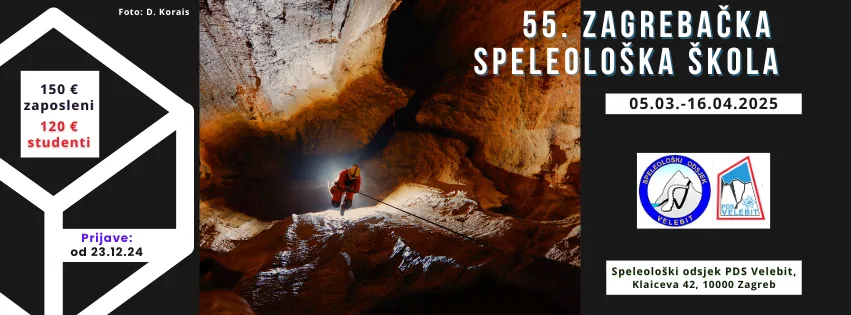

55. speleološka škola - prijave
Hola! U novu godinu oštro i na prvu! Otvorene su prijave za 55. po redu Zagrebačku speleološku školu. Imaš li ono u sebi potrebno za susret sa novim i nepoznatim svijetom?

Ako voliš prirodu, kretanje i život na otvorenom te učenje novih vještina i istraživanje nepoznatog, a k tomu si još i timski igrač/ica, prijavi se na 55. speleo školu u organizaciji SOV-a!
Termin: 05.03.-16.04.25
Cijena: 150 € odrasli / 120 € studenti
- Posebna pogodnost za školarce - mogućnost kupnje knjige ‘Speleologija’ po cijeni od 10 € (50% popusta). Više o tiskanim izdanjima našeg PDS Velebit možete doznati ovdje.
Što ćeš naučiti?
Na predavanjima i vikend izletima naučiti ćemo više o cijelom spektru tema, vještina i znanja:
- Kako se sigurno kretati i boraviti u prirodi – oprema, orjentacija, meteorologija, prehrana, bivakiranje, vatra, itd. Poseban naglasak ide na prevenciju opasnosti te pružanje prve pomoći
- Koje su nam tehnike, vještine i oprema potrebni za istraživanje speleo objekata?
- Kako savladati vertikalne prostore u špiljama i jamama, koristeći tehniku jednostrukog užeta (SRT) i sprave za spuštanje/penjanje
- Kako topografski snimiti (‘kartirati’) speleo objekt?
- Kako organizirati i sprovesti speleološke ekspedicije i istraživanja
- Koje posebne tehnike istraživanja koristimo u podzemlju (penjanje, ronjenje)
- Koje su osobitosti hrvatskog podzemlja u smislu geologije, biospeleologije, paleontologije i arehologije
- Itd.
Saznati ćete i više o tome što nas motivira da odlazimo u podzemlje i duboko u divljinu te što je to ‘Velebitaški duh’ koji nas u tome svemu ‘tjera’. A za kraj ovog dijela ćemo još i citirati voditeljicu škole 2023 (M.G.), koja je vrlo dobro opisala još jedan bitan aspekt speleo škole: ‘Najviše od svega shvatiti ćeš što znači biti dio tima i jedne malo otkačene zajednice, dobro se zabaviti te steći nova prijateljstva.’
Ako sve ovo zajedno dobro zvuči, čitaj dalje 😊 !
Kada kreće speleološka škola i kako je organizirana?
Škola se odvija u periodu 05. 03.-16. 04. 2025. i sastoji se od teorijskih predavanja srijedom i praktičnih vježbi na vanjskoj stijeni i u speleo objektima vikendom. U nastavku dajemo plan izleta i predavanja, koji je podložan promjenama uslijed vremenskih nepogoda, više sile i sl.
PREDAVANJA
Održavaju se srijedom 18h-21h, u prostorima PDS Velebita, Klaićeva 42, 10000 Zagreb. Termini: 05.03. / 12.03. / 19.03. / 26.03. / 02.04. / 09.04. / 16.04. (završno predavanje i dodjela diploma)
IZLETI (6 vikend izleta)
08. 03.-09. 03. 2025.
15. 03. 2025.
16. 03. 2025
22. 03.-23. 03. 2025.
29. 03.-30. 03. 2025.
05. 04.-06. 04. 2025.
12. 04.-13. 04 .2025.
Informacije o speleološkim objektima u kojima će se provoditi edukacija biti će dostupne nakon formiranja škole ili prije početka predavanja. Organizator škole i voditelji imaju mogućnost promjene mjesta / lokacije u slučaju nepogodnih vremenskih uvjeta ili drugih razloga koji bi onemogućavali provedbu na planiranom mjestu.
Koja je cijena?
Cijena škole iznosi 120 eura ako si student, a 150 eura ako si zaposlen. U cijenu je uključeno 6 termina predavanja kao i trošak organizacije, opreme i sl. za 6 vikend terena. Od dodatnih troškova imati ćeš još osobni trošak hrane i pića te prijevoza na izlete, na koje putujemo osobnim automobilima članova društva i škole te dijelimo trošak auta na putnike.
U cijenu škole uključeno je i osiguranje od nezgode (HPS) te dodatno osiguranje od osiguravajuće kuće, kao i sva potrebna speleološka tehnička oprema, uz mogućnost posuđivanja opreme i nakon završene škole. Škola uključuje i ‘zamku’ (pomoćno uže duljine 5 m) te se nadamo za vas ostvariti i mogućnost popusta na kupovinu planinarske, speleološke i druge opreme u specijaliziranim trgovinama (više info u siječnju). Školu možeš platiti jednokratno ili na dvije rate za što ćeš dobiti više info nakon što ispuniš obrazac za prijavu. U cijenu školarine uključen je i Velebiten, godišnji časopis našeg društva, koji izlazi još od 1990. godine.
Kako se prijaviti?
Prijaviti se možeš putem obrasca OVDJE. Prije prijave, molimo OBAVEZNO PROČITAJ često postavljana pitanja, da stekneš malo bolji dojam o tome kako funkcionira naša škola i da li ti odgovara koncept. Požuri s prijavom jer je broj polaznika ograničen (15-17). Nakon popunjene prijavnice kontaktirati će te voditelj škole (Edo Vričić), sa daljnjim informacijama, terminom za razgovor i sl.
Vidimo se na školi!
Kontakt: speleoskola.sov@gmail.com
Voditelj škole: Edo Vričić
I na kraju, za sve što te zanima o speleološkoj školi ne trebaš surfati uokolo.
Ovdje imaš apsolutno sve o speleološkim školama, dugoj povijesti naše Zagrebačke speleološke škole, uzbudljive priče školaraca kao i bogate fotogalerije prošlih škola. Ali ne samo to, posjetite i naš Youtube kanal sa dobrim naramkom zanimljivih filmića.